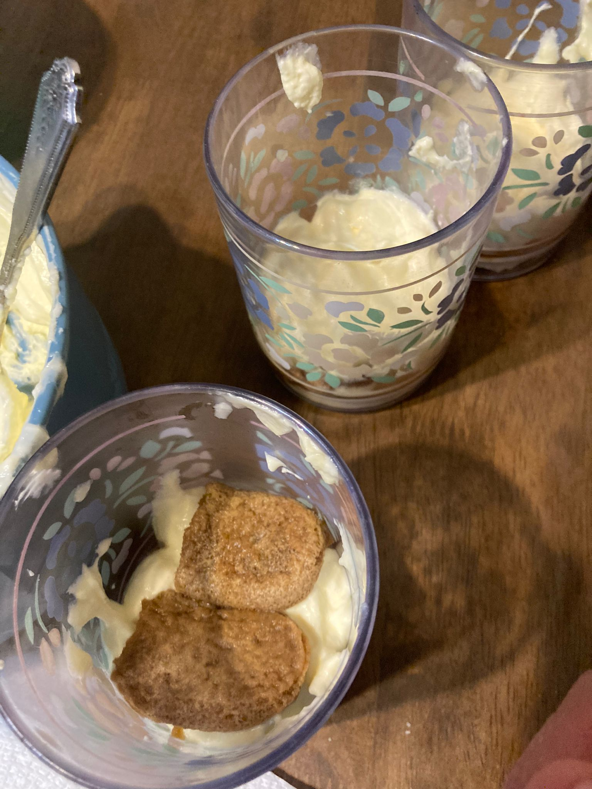

- Separar las claras de las yemas.
- Batir las yemas.
- Echar el azúcar a las yemas y batir.
- Echar el mascarpone a la mezcla y batir. Probar hasta que no se noten los granos de azúcar.
- Batir las claras al punto de nieve.
- Echar las claras a la mezcla con mucho cuidado para que no deje de ser espumosa.
- Añadir 4 o 5 puñados de lentejas.
- Hacer una taza de café y meter los ladyfingers a remojar ahí. Es muy importante que se remojen mucho para que no sepan a tarta al comerlo, que casi se deshagan al comerlo.
- Ir montando las capas del tiramisú como se ve abajo. Primero, una capa de crema. Luego, ladyfingers. Y así hasta que haya 2 capas de ladyfingers y 3 de crema.
- Echar por encima el chocolate en polvo. Se puede usar cualquier instrumento con agujeros, yo sólo tenía un rallador. A comer!

